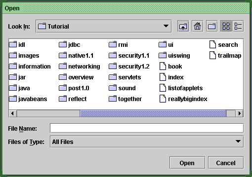
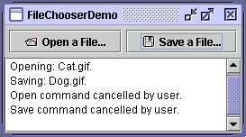
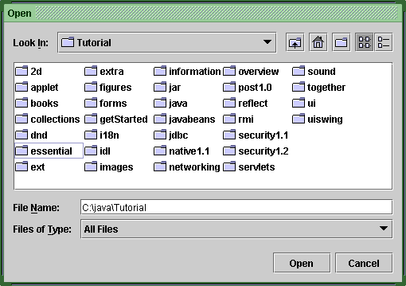
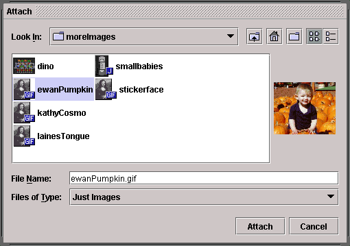

Feedback Form
|
|
Start of Tutorial > Start of Trail > Start of Lesson |
Search
Feedback Form |
File choosers provide a GUI for navigating the file system, and then either choosing a file or directory from a list or entering the name of a file or directory. To display a file chooser, you usually use theJFileChooserAPI to show a modal dialog containing the file chooser. Another way to present a file chooser is to add an instance ofJFileChooserto a container.
Note: If you intend to distribute your program as an unsigned JavaTM Web Start application, then instead of using theJFileChooserAPI you should use the file services provided by the JNLP API. These services —FileOpenServiceandFileSaveService— not only provide support for choosing files in a restricted environment, but also take care of actually opening and saving them. An example of using these services is in JWSFileChooserDemo. Documentation for using the JNLP API is in the Java Web Start Developer's Guide.
The rest of this section discusses how to use the
JFileChooserAPI. AJFileChooserobject only presents the GUI for choosing files. Your program is responsible for doing something with the chosen file, such as opening or saving it. Refer to I/O: Reading and Writing (but no 'rithmetic)for information on how to read and write files.
The
JFileChooserAPI makes it easy to bring up open and save dialogs. The look and feel determines what these standard dialogs look like and how they differ. In the Java look and feel, the save dialog looks the same as the open dialog, except for the title on the dialog's window and the text on the button that approves the operation. Here is a picture of the Java look and feel's standard open dialog: Here's a snapshot of an application that brings up an open dialog and a save dialog.

Bringing up a standard open dialog requires only two lines of code:
Try this:
- Compile and run FileChooserDemo. See the examples index for links to all the files required by this example.
- Click the Open a File... button. Navigate around the file chooser, choose a file, and click the dialog's Open button.
- Use the Save a File... button to bring up a save dialog. Try to use all of the controls on the file chooser.
- In the source file
FileChooserDemo.java, change the file selection mode to directories-only mode. (Search for
DIRECTORIES_ONLYand uncomment the line that contains it.) Then compile and run the example again. You'll only be able to see and select directories, not ordinary files.The argument to the//Create a file chooser final JFileChooser fc = new JFileChooser(); ... //In response to a button click: int returnVal = fc.showOpenDialog(aComponent);showOpenDialogmethod specifies the parent component for the dialog. The parent component affects the position of the dialog and the frame that the dialog depends on. For example, the Java look and feel places the dialog directly over the parent component. If the parent component is in a frame, then the dialog is dependent on that frame, disappearing when the frame is iconified and reappearing when the frame is deiconified.By default, a file chooser that hasn't been shown before displays all files in the user's home directory. You can specify the file chooser's initial directory using one of
JFileChooser's other constructors, or you can set the directory with thesetCurrentDirectorymethod.The call to
showOpenDialogappears in theactionPerformedmethod of the Open a File... button's action listener:Thepublic void actionPerformed(ActionEvent e) { //Handle open button action. if (e.getSource() == openButton) { int returnVal = fc.showOpenDialog(FileChooserDemo.this); if (returnVal == JFileChooser.APPROVE_OPTION) { File file = fc.getSelectedFile(); //This is where a real application would open the file. log.append("Opening: " + file.getName() + "." + newline); } else { log.append("Open command cancelled by user." + newline); } } ... }showXxxDialogmethods return an integer that indicates whether the user selected a file. Depending on how you use a file chooser, it's often sufficient to check whether the return value isAPPROVE_OPTIONand to do nothing for any other value. To get the chosen file (or directory, if you set up the file chooser to allow directory selections), callgetSelectedFileon the file chooser. This method returns an instance ofFileThe example gets the name of the file and uses it in the log message. You can call other methods on the
Fileobject, such asgetPath,isDirectory, orexiststo get information about the file. You can also call other methods such asdeleteandrenameto change the file in some way. Of course, you might also want to open or save the file using one of the reader or writer classes provided by the Java platform. See I/O: Reading and Writing (but no 'rithmetic)The example program uses the same instance of
JFileChooserto display a standard save dialog. This time the program callsshowSaveDialog:By using the same file chooser instance to display its open and save dialogs, the program reaps these benefits:int returnVal = fc.showSaveDialog(FileChooserDemo.this);Finally, the example program has commented-out lines of code that let you change the file selection mode. For example, the following line of code makes the file chooser able to select only directories, and not files:
- The chooser remembers the current directory between uses so the open and save versions automatically share the same current directory.
- You have to customize only one file chooser, and the customizations apply to both the open and save versions of it.
Another possible selection mode isfc.setFileSelectionMode(JFileChooser.DIRECTORIES_ONLY);FILES_AND_DIRECTORIES. The default isFILES_ONLY. The following picture shows an open dialog with the file selection mode set toDIRECTORIES_ONLY. Note that, in the Java look and feel at least, only directories are visible — not files. If you want to create a file chooser for a task other than opening or saving, or if you want to customize the file chooser, keep reading. We'll discuss the following topics:
Let's look atFileChooserDemo2, a modified version of the previous demo program that uses more of theJFileChooserAPI. This example uses a file chooser that has been customized in several ways. Like the original example, the user invokes a file chooser with the push of a button. Here's a picture of the file chooser:
As the figure shows, this file chooser has been customized for a special task (Attach), provides a user-choosable file filter (Just Images), uses a special file view for image files, and has an accessory component that displays a thumbnail sketch of the currently selected image file.
The remainder of this section shows you the code that creates and customizes this file chooser. See the examples index for links to all the files required by this example.
As you've seen,JFileChooserprovidesshowOpenDialogfor displaying an open dialog andshowSaveDialogfor displaying a save dialog.The class has another method,
showDialog, for displaying a file chooser for a custom task in a dialog. In the Java look and feel, the only difference between this dialog and the other file chooser dialogs is the title on the dialog window and the label on the approve button. Here's the code fromFileChooserDemo2that brings up the file chooser dialog for the Attach task:The first argument to theJFileChooser fc = new JFileChooser(); int returnVal = fc.showDialog(FileChooserDemo2.this, "Attach");showDialogmethod is the parent component for the dialog. The second argument is aStringthat provides both the title for the dialog window and the label for the approve button.Once again, the file chooser doesn't do anything with the selected file. The program is responsible for implementing the custom task for which the file chooser was created.
By default, a file chooser displays all of the files and directories that it detects, except hidden files. A program can apply one or more file filters to a file chooser so that the chooser shows only some files. The file chooser calls the filter'sacceptmethod for each file to determine whether it should be displayed. A file filter accepts or rejects a file based on some criteria such as file type, size, ownership, and so on. Filters affect the list of files displayed by the file chooser. The user can enter the name of any file even if it's not displayed.
JFileChoosersupports three different kinds of filtering. The filters are checked in the order listed here. For example, an application-controlled filter sees only those files accepted by the built-in filtering.
- Built-in filtering
- Filtering is set up through specific method calls on a file chooser. Currently the only built-in filter available is for hidden files, such as those that begin with period (.) on UNIX systems. By default, hidden files are not shown. Call
setFileHidingEnabled(false)to show hidden files.- Application-controlled filtering
- The application determines which files are shown. Create a custom subclass of
FileFiltersetFileFilter. The file chooser shows only those files that the filter accepts.- User-choosable filtering
- The file chooser GUI provides a list of filters that the user can choose from. When the user chooses a filter, the file chooser shows only those file accepted by that filter.
FileChooserDemo2adds a custom file filter to the list of user-choosable filters:By default, the list of user-choosable filters includes the Accept All filter, which lets the user see all non-hidden files. This example uses the following code to disable the Accept All filter:fc.addChoosableFileFilter(new ImageFilter());Our custom file filter is implemented infc.setAcceptAllFileFilterUsed(false);ImageFilter.javaFileFilter. TheImageFilterclass implements thegetDescriptionmethod to return "Just Images" — a string to put in the list of user-choosable filters.ImageFilteralso implements theacceptmethod so that it accepts all directories and any file that has a.png,.jpg,.jpeg,.gif,.tif, or.tifffilename extension.By accepting all directories, this filter allows the user to navigate around the file system. If the bold lines were omitted from this method, the user would be limited to the directory with which the chooser was initialized.public boolean accept(File f) { if (f.isDirectory()) { return true; } String extension = Utils.getExtension(f); if (extension != null) { if (extension.equals(Utils.tiff) || extension.equals(Utils.tif) || extension.equals(Utils.gif) || extension.equals(Utils.jpeg) || extension.equals(Utils.jpg) || extension.equals(Utils.png)) { return true; } else { return false; } } return false; }The preceding code sample uses the
getExtensionmethod and several string constants fromUtils.javapublic class Utils { public final static String jpeg = "jpeg"; public final static String jpg = "jpg"; public final static String gif = "gif"; public final static String tiff = "tiff"; public final static String tif = "tif"; public final static String png = "png"; /* * Get the extension of a file. */ public static String getExtension(File f) { String ext = null; String s = f.getName(); int i = s.lastIndexOf('.'); if (i > 0 && i < s.length() - 1) { ext = s.substring(i+1).toLowerCase(); } return ext; } }
In the Java look and feel, the chooser's list shows each file's name and displays a small icon that represents whether the file is a true file or a directory. You can customize this file view by creating a custom subclass ofFileViewsetFileView. The example uses an instance of a custom class, implemented inImageFileView.javafc.setFileView(new ImageFileView());ImageFileViewshows a different icon for each type of image accepted by the image filter described previously.The
ImageFileViewclass overrides the five abstract methods defined inFileViewas follows.
String getTypeDescription(File f)- Returns a description of the file type. This is not yet used by any look and feel. Here is
ImageFileView's implementation of this method:public String getTypeDescription(File f) { String extension = Utils.getExtension(f); String type = null; if (extension != null) { if (extension.equals(Utils.jpeg) || extension.equals(Utils.jpg)) { type = "JPEG Image"; } else if (extension.equals(Utils.gif)){ type = "GIF Image"; } else if (extension.equals(Utils.tiff) || extension.equals(Utils.tif)) { type = "TIFF Image"; } else if (extension.equals(Utils.png)){ type = "PNG Image"; } } return type; }Icon getIcon(File f)- Returns an icon representing the file or its type. Here is
ImageFileView's implementation of this method:public Icon getIcon(File f) { String extension = Utils.getExtension(f); Icon icon = null; if (extension != null) { if (extension.equals(Utils.jpeg) || extension.equals(Utils.jpg)) { icon = jpgIcon; } else if (extension.equals(Utils.gif)) { icon = gifIcon; } else if (extension.equals(Utils.tiff) || extension.equals(Utils.tif)) { icon = tiffIcon; } else if (extension.equals(Utils.png)) { icon = pngIcon; } } return icon; }String getName(File f)- Returns the name of the file. Most implementations of this method should return
nullto indicate that the look and feel should figure it out. Another common implementation returnsf.getName().
String getDescription(File f)- Returns a description of the file. This is not yet used by any look and feel. The intent is to describe individual files more specifically. A common implementation of this method returns
nullto indicate that the look and feel should figure it out.
Boolean isTraversable(File f)- Returns whether a directory is traversable. Most implementations of this method should return
nullto indicate that the look and feel should figure it out. Some applications might want to prevent users from descending into a certain type of directory because it represents a compound document. TheisTraversablemethod should never returntruefor a non-directory.
The customized file chooser inFileChooserDemo2has an accessory component. If the currently selected item is a PNG, JPEG, TIFF, or GIF image, the accessory component displays a thumbnail sketch of the image. Otherwise, the accessory component is empty. Aside from a previewer, probably the most common use for the accessory component is a panel with more controls on it — say, checkboxes that toggle some features.The example calls the
setAccessorymethod to establish an instance of theImagePreviewclass, implemented inImagePreview.javaAny object that inherits fromfc.setAccessory(new ImagePreview(fc));JComponentcan be an accessory component. The component should have a preferred size that looks good in the file chooser.The file chooser fires a property change event when the user selects an item in the list. A program with an accessory component must register to receive these events to update the accessory component whenever the selection changes. In the example, the
ImagePreviewobject itself registers for these events. This keeps all the code related to the accessory component together in one class.Here is the example's implementation of the
propertyChangemethod, which is the method called when a property change event is fired:If//where member variables are declared File file = null; ... public void propertyChange(PropertyChangeEvent e) { boolean update = false; String prop = e.getPropertyName(); //If the directory changed, don't show an image. if (JFileChooser.DIRECTORY_CHANGED_PROPERTY.equals(prop)) { file = null; update = true; //If a file became selected, find out which one. } else if (JFileChooser.SELECTED_FILE_CHANGED_PROPERTY.equals(prop)) { file = (File) e.getNewValue(); update = true; } //Update the preview accordingly. if (update) { thumbnail = null; if (isShowing()) { loadImage(); repaint(); } } }SELECTED_FILE_CHANGED_PROPERTYis the property that changed, this method gets aFileobject from the file chooser. TheloadImageandrepaintmethods use theFileto load the image and repaint the accessory component.
The API for using file choosers falls into these categories:
- Creating and Showing the File Chooser
- Selecting Files and Directories
- Navigating the File Chooser's List
- Customizing the File Chooser
Creating and Showing the File Chooser Method or Constructor Purpose JFileChooser()
JFileChooser(File)
JFileChooser(String)Create a file chooser instance. The FileandStringarguments, when present, provide the initial directory.int showOpenDialog(Component)
int showSaveDialog(Component)
int showDialog(Component, String)Show a modal dialog containing the file chooser. These methods return APPROVE_OPTIONif the user approved the operation andCANCEL_OPTIONif the user cancelled it. Another possible return value isERROR_OPTION, which means an unanticipated error occurred.
Selecting Files and Directories Method Purpose void setSelectedFile(File)
File getSelectedFile()Set or get the currently selected file or (if directory selection has been enabled) directory. void setSelectedFiles(File[])
File[] getSelectedFiles()Set or get the currently selected files. void setFileSelectionMode(int)
void getFileSelectionMode()
boolean isDirectorySelectionEnabled()
boolean isFileSelectionEnabled()Set the file selection mode. Acceptable values are FILES_ONLY(the default),DIRECTORIES_ONLY, andFILES_AND_DIRECTORIES.void setMultiSelectionEnabled(boolean)
void isMultiSelectionEnabled()Set or get whether multiple files can be selected at once. By default, a user can choose only one file. void setAcceptAllFileFilterUsed(boolean)
boolean isAcceptAllFileFilterUsed()Set or get whether the AcceptAllfile filter is used as an allowable choice in the choosable filter list; the default value istrue. Introduced in 1.3.Dialog createDialog(Component)Given a parent component, create and return a new dialog that contains this file chooser, is dependent on the parent's frame, and is centered over the parent. Introduced in 1.4.
Navigating the File Chooser's List Method Purpose void ensureFileIsVisible(File)Scroll the file chooser's list such that the indicated file is visible. void setCurrentDirectory(File)
File getCurrentDirectory()Set or get the directory whose files are displayed in the file chooser's list. void changeToParentDirectory()Change the list to display the current directory's parent. void rescanCurrentDirectory()Check the file system and update the chooser's list. void setDragEnabled(boolean)
boolean getDragEnabled()Set or get the property that determines whether automatic drag handling is enabled. See Drag and Drop
Customizing the File Chooser Method Purpose void setAccessory(javax.swing.JComponent)
JComponent getAccessory()Set or get the file chooser's accessory component. void setFileFilter(FileFilter)
FileFilter getFileFilter()Set or get the file chooser's primary file filter. void setFileView(FileView)
FileView getFileView()Set or get the chooser's file view. FileFilter[] getChoosableFileFilters()
void addChoosableFileFilter(FileFilter)
boolean removeChoosableFileFilter(FileFilter)
void resetChoosableFileFilters()
FileFilter getAcceptAllFileFilter()Set, get, or modify the list of user-choosable file filters. void setFileHidingEnabled(boolean)
boolean isFileHidingEnabled()Set or get whether hidden files are displayed. void setControlButtonsAreShown(boolean)
boolean getControlButtonsAreShown()Set or get the property that indicates whether the Approve and Cancel buttons are shown in the file chooser. This property is true by default. Introduced in 1.3.
This table shows the examples that useJFileChooserand where those examples are described.
Example Where Described Notes FileChooserDemoThis section Displays an open dialog and a save dialog. FileChooserDemo2This section Uses a file chooser with custom filtering, a custom file view, and an accessory component. DragFileDemoHow to Use Drag and Drop and Data Transfer Uses a file chooser directly, without a dialog, and demonstrates dragging files. JWSFileChooserDemoThis section Uses the JNLP API to open and save files.
|
|
Start of Tutorial > Start of Trail > Start of Lesson |
Search
Feedback Form |
Copyright 1995-2004 Sun Microsystems, Inc. All rights reserved.